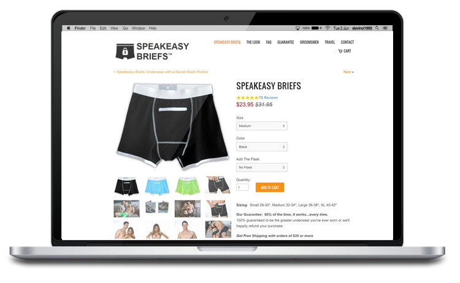

Role: Frontend Developer & Co-Founder
Stack: JavaScript, jQuery, AJAX, Liquid, HTML, CSS, Photoshop
Speakeasy Briefs is a men’s apparel company initially launched on Kickstarter. As the front-end developer, I designed and built the website. Once completed, I used A/B split testing to optimize the user experience, which increased the conversion rate by over 70%.
I also implemented digital marketing campaigns utilizing several platforms including Facebook Ads, Google AdWords, Google Analytics, and Twitter Ads.
Speakeasy Briefs was recognized as a "top selling merchant" on RedditGifts and was accepted into the Amazon Launchpad program. Speakeasy Briefs has received national and local news coverage, including: Forbes, NPR, FOX News, and the San Francisco Chronicle.
